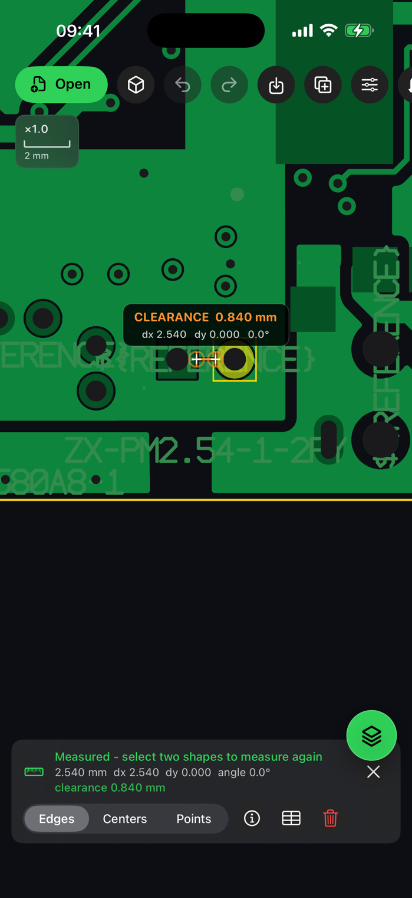

Mesures
Mesurez bord à bord, centre à centre ou point à point, avec aimantage aux objets ou à la grille, historique et export CSV.
Mesure et modification
Allez au-delà de la simple visualisation. Mesurez les relations réelles de la carte, ajustez les formes prises en charge avec des dimensions numériques et créez des répétitions de production dans le même espace mobile.
Choisissez Bords, Centres ou Points, puis sélectionnez les deux références. AGBoard affiche la cote directement sur la carte avec distance, décalages horizontal et vertical, angle, jeu réel ou chevauchement.
Les outils de modification agissent sur les géométries source prises en charge. Déplacez, dupliquez, redimensionnez ou supprimez, appliquez des transformations groupées et prévisualisez la panélisation.
Mesurez bord à bord, centre à centre ou point à point, avec aimantage aux objets ou à la grille, historique et export CSV.
Ajustez dimensions et rayon d'angle pris en charge avec une prévisualisation avant application.
Choisissez lignes, colonnes et pas pour dupliquer la géométrie sélectionnée dans un panneau régulier.

Oui. Le mode Bords place la cote sur les bords physiques les plus proches et indique le jeu ou le chevauchement. Les modes Centres et Points restent disponibles pour les cotes de placement et mécaniques.
Non. Le réglage du panneau affiche une prévisualisation et ne s'applique qu'après confirmation.
La modification dépend de ce que le format source peut représenter correctement. AGBoard garde les opérations non prises en charge explicites au lieu d'approximer les données en silence.
Téléchargez AGBoard sur iPhone ou iPad. Cinq ouvertures de fichiers sont incluses avant qu'un abonnement AGBoard Pro soit requis.